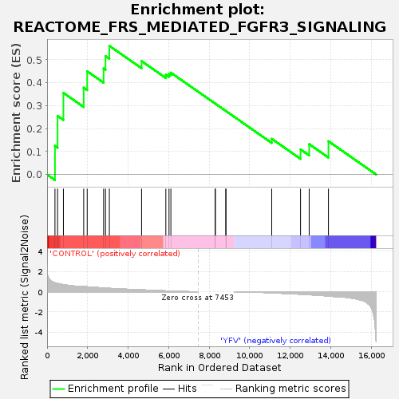
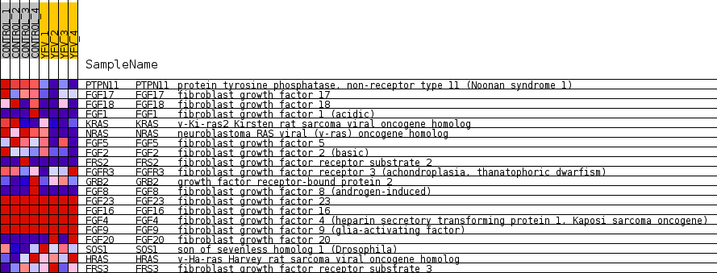
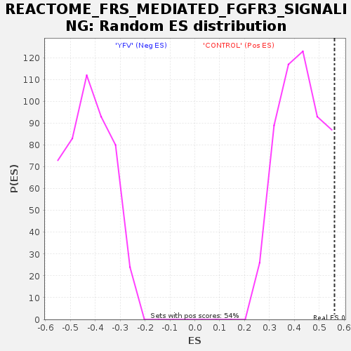

| Dataset | MATRIZ_GSE99081_collapsed_to_symbols.gsea_CLASE_99081.cls#CONTROL_versus_YFV |
| Phenotype | gsea_CLASE_99081.cls#CONTROL_versus_YFV |
| Upregulated in class | CONTROL |
| GeneSet | REACTOME_FRS_MEDIATED_FGFR3_SIGNALING |
| Enrichment Score (ES) | 0.5610916 |
| Normalized Enrichment Score (NES) | 1.3360709 |
| Nominal p-value | 0.037383176 |
| FDR q-value | 1.0 |
| FWER p-Value | 1.0 |

| SYMBOL | TITLE | RANK IN GENE LIST | RANK METRIC SCORE | RUNNING ES | CORE ENRICHMENT | |
|---|---|---|---|---|---|---|
| 1 | PTPN11 | protein tyrosine phosphatase, non-receptor type 11 (Noonan syndrome 1) | 389 | 0.883 | 0.1248 | Yes |
| 2 | FGF17 | fibroblast growth factor 17 | 517 | 0.823 | 0.2557 | Yes |
| 3 | FGF18 | fibroblast growth factor 18 | 806 | 0.701 | 0.3561 | Yes |
| 4 | FGF1 | fibroblast growth factor 1 (acidic) | 1807 | 0.500 | 0.3787 | Yes |
| 5 | KRAS | v-Ki-ras2 Kirsten rat sarcoma viral oncogene homolog | 1980 | 0.487 | 0.4501 | Yes |
| 6 | NRAS | neuroblastoma RAS viral (v-ras) oncogene homolog | 2790 | 0.368 | 0.4622 | Yes |
| 7 | FGF5 | fibroblast growth factor 5 | 2883 | 0.355 | 0.5164 | Yes |
| 8 | FGF2 | fibroblast growth factor 2 (basic) | 3073 | 0.334 | 0.5611 | Yes |
| 9 | FRS2 | fibroblast growth factor receptor substrate 2 | 4663 | 0.186 | 0.4944 | No |
| 10 | FGFR3 | fibroblast growth factor receptor 3 (achondroplasia, thanatophoric dwarfism) | 5860 | 0.088 | 0.4354 | No |
| 11 | GRB2 | growth factor receptor-bound protein 2 | 6017 | 0.074 | 0.4383 | No |
| 12 | FGF8 | fibroblast growth factor 8 (androgen-induced) | 6109 | 0.067 | 0.4441 | No |
| 13 | FGF23 | fibroblast growth factor 23 | 8299 | 0.000 | 0.3091 | No |
| 14 | FGF16 | fibroblast growth factor 16 | 8300 | 0.000 | 0.3091 | No |
| 15 | FGF4 | fibroblast growth factor 4 (heparin secretory transforming protein 1, Kaposi sarcoma oncogene) | 8821 | 0.000 | 0.2770 | No |
| 16 | FGF9 | fibroblast growth factor 9 (glia-activating factor) | 8824 | 0.000 | 0.2769 | No |
| 17 | FGF20 | fibroblast growth factor 20 | 11086 | -0.108 | 0.1557 | No |
| 18 | SOS1 | son of sevenless homolog 1 (Drosophila) | 12507 | -0.246 | 0.1096 | No |
| 19 | HRAS | v-Ha-ras Harvey rat sarcoma viral oncogene homolog | 12934 | -0.292 | 0.1325 | No |
| 20 | FRS3 | fibroblast growth factor receptor substrate 3 | 13885 | -0.423 | 0.1451 | No |

